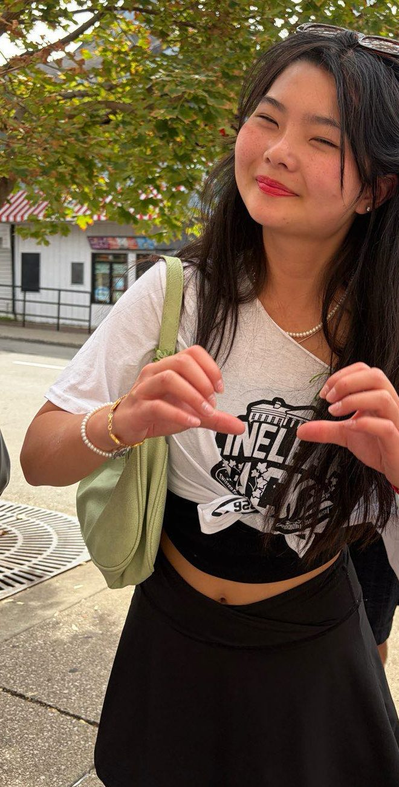
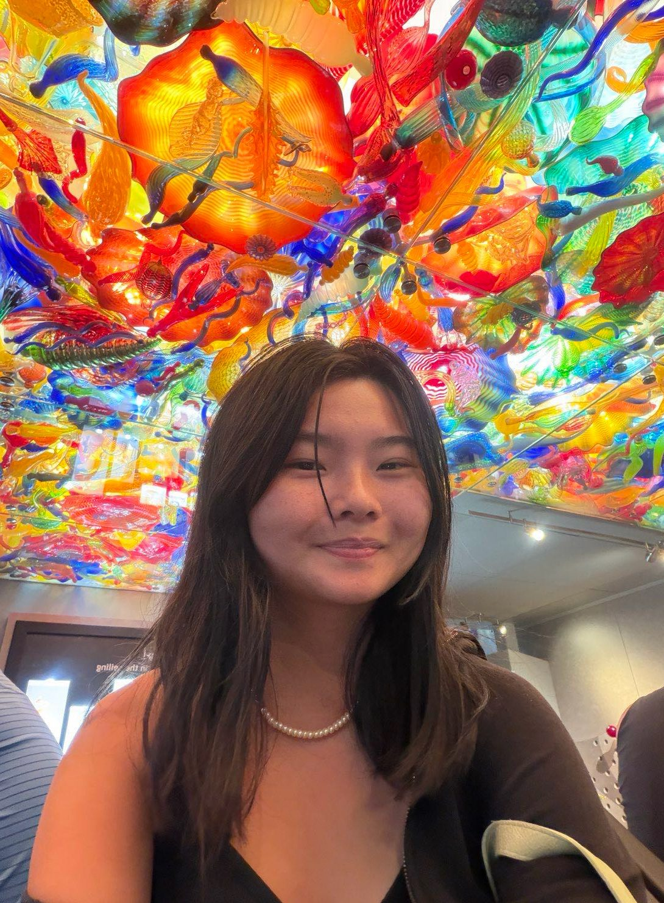
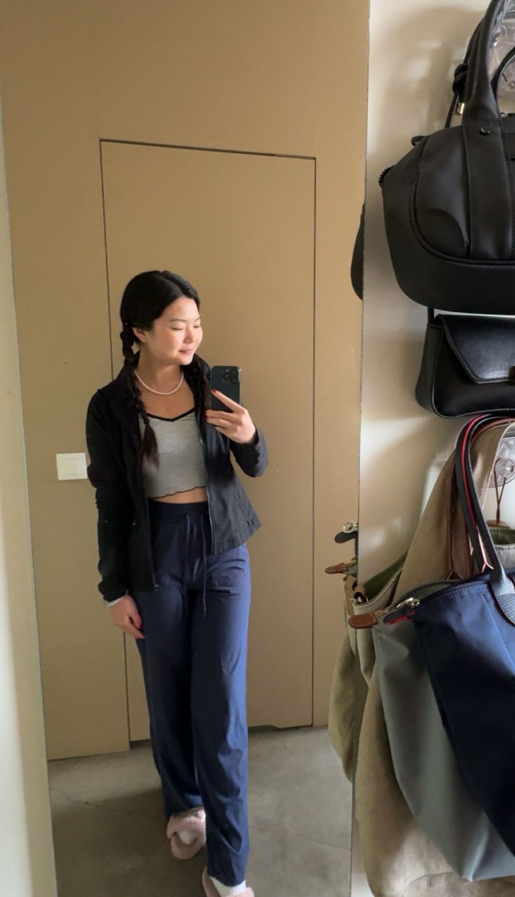

Jade Zhao · Informatics · Luddy · she/her
The product is whether they can keep using it.
Jade Zhao 赵郎溪 · Digital Humans Project Lead · Serve IT team lead. Five clinic semesters, from City of Bloomington accessibility tester to Town of Nashville audit lead. I build systems the organisation can run after I leave.
- 5 clinic semesters
- INFO I389 / I489 capstone
- Bloomington tester to Nashville lead
01 · Overview
Shipped proof, one ladder
Informatics at Luddy is people, information, and technology in one system: who it is for, whether they can use it, and whether the organisation can keep it. The Serve IT Clinic is where that becomes a capstone: INFO I389, then INFO I489, a real partner, a handoff staff can run. The ladder below is what I led, built, and audited. Full write-ups are on the case studies page.
02 · Serve IT
Laurie Burns McRobbie Serve IT Clinic
Who it is for: nonprofits, chambers, and municipal sites whose staff must run the product after students leave. What shipped: accessible navigation, WordPress rebuilds, stakeholder pages, and audit reports. How judged: can they keep using it without a student team on retainer?
The Laurie Burns McRobbie Serve IT Clinic is Luddy's undergraduate tech clinic and Informatics capstone: course credit, a real partner, a handoff staff can keep. INFO I389, then INFO I489: 6 credits over two consecutive semesters, minimum 3 semesters in the clinic.
I joined as a freshman intern, Jan 2024 to May 2024: 19 students from 125 applications (about 6.5% that semester only), starting as accessibility tester for the City of Bloomington. One ladder below, not five jobs.
-
Accessibility tester, City of Bloomington
Freshman intern: keyboard and screen-reader tests, then written recommendations.
-
WordPress redesign lead, Middle Way House
Rebuilt journeys with staff so essential information is findable.
-
Web development lead, Indiana Phenology
One navigation structure for public visitors and research users.
-
Web designer, Greater Bloomington Chamber of Commerce
Stakeholder asks became pages staff can find and keep.
-
First year as team lead. Accessibility auditor, Town of Nashville
Accessibility audit with recommendations only. No live-site edits.
03 · Research + ships
Digital Humans and client work
- Digital Humans · Luddy Project lead on AI-driven interfaces people trust when nothing flashy is happening. Undergraduate product research at the Luddy School, in the same Informatics orbit as the Serve IT capstone. Adoption and disclosure after the demo, not avatar theatre.
- Handshake · content creator Handshake content creator since Aug 2023: early-career posts on workplace norms, professional communication, and career decisions. Student-facing career content on the Handshake platform; complements builder proof, not a substitute for Serve IT ships. Career advice only lands if a student can act on it the next week.
- Jade🪴 Client web, branding, and software for small businesses and nonprofits I ship under my own name. Family restaurant marketing and nonprofit partners taught me the same handoff test as the clinic. Owners without a developer on call still have to run it Monday morning.
- Why a duck farm A long want: animals, water, gates, mornings that do not care if the idea was elegant. Not a launch; a small sketch on this site is a pond I poke at myself. Show up for the place the way a restaurant has to open on Friday night.
04 · Life
Outside work and school
The rest of the week.
-

Back to school bar crawl On a sidewalk under a tree, sunglasses on her head. A start-of-term crawl: a crowd moving between stops on a street that was not built as a route. No clear next stop, no crawl. -

Children's museum glass Under a ceiling of coloured blown glass. Fireworks of Glass at the Children's Museum of Indianapolis, Dale Chihuly's ceiling over the main ramp. One ramp: child, wheelchair, tired adult. -
Spain, Moncloa By a fountain at dusk, in a lemon-print dress. Moncloa is the Madrid district beside Ciudad Universitaria, where students and the city use the same ground. Sit, leave, still know where you are. -
Madrid, Sol At night, in front of the equestrian statue at Puerta del Sol. The square is the heart of Madrid, and the kilometre zero Spain measures its roads from. The statue is Carlos III. Meeting points must read obvious to strangers. -

Madrid dorm for Universidad Complutense de Madrid (UCM) In a mirror, hair in two braids, bags on the wall. Student housing during study abroad at UCM, Spring 2026, in the university city at Moncloa. Usable after week one, not only move-in day. -
Madrid, Gran Vía By a window at dusk, with the city lit behind the glass. Gran Vía runs from near Cibeles to Plaza de España, cut through the old centre as Madrid's main avenue. Stage lighting does not excuse a dark walk home.
05 · Contact
Hire path
CV and case studies first. Email for clinic or Nashville audit detail.